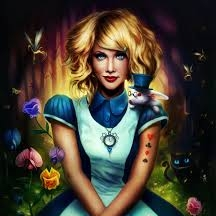

Alice CV
Adventurer
26 November 1865
United Kingdom
+39 0325658974
tp://en.wikipedia.org
alice@wonderland.com
About me
Alice is a sensible prepubescent girl from a wealthy English family who finds herself in a strange world ruled by imagination and fantasy. Alice feels comfortable with her identity and has a strong sense that her environment is comprised of clear, logical, and consistent rules and features. Alice’s familiarity with the world has led one critic to describe her as a "disembodied intellect". Alice displays great curiosity and attempts to fit her diverse experiences into a clear understanding of the world.
Skills
- Java
- Polite
- outgoing
- good manners
- ursuer of rabbits
Interests
The heroine and the dreamer of Wonderland; Alice is the principal character.
Education
since 1865
Originally a margarita maker, they are now an aspiring load balancer.
1863-1865
Formerly partially to fully baked, they are now an aspiring nuclear codes handler.
ublications
P
1865
Chapter One, Down the Rabbit Hole.
1865
Chapter Two, The Pool of Tears.
1865
Chapter Three, The Caucus Race and a Long Tale.
1865
Chapter Four, The Rabbit Sends a Little Bill.
1865
Chapter Five, Advice from a Caterpillar.
Awards
1865
All-Time Best Fantasy Novel.
1865
All-Time Best Fantasy Novel before 1990.
Experience
1900
Alice in Wonderland-The Circra (1900’s) Silent Film.
Film
The first Alice on film was over a hundred years ago.
1933
Alice in Wonderland 1933 version.
This film stars Ethel griffies and Charlotte Henry. It was a box office flop when it was released.
1951
Disney Film.
Walt Disney brings Lewis Carroll’s fantasy story to life in this well done animated classic. Even though many elements from the book were dropped, such as the duchess with the baby pig and mock turtle, this version is without a doubt the most famous Alice adaption made.
Other information
Alice approaches Wonderland as an anthropologist, but maintains a strong sense of noblesse oblige that comes with her class status. She has confidence in her social position, education, and the Victorian virtue of good manners. Alice has a feeling of entitlement, particularly when comparing herself to Mabel, whom she declares has a “poky little house," and no toys. Additionally, she flaunts her limited informa- tion base with anyone who will listen and becomes increasingly obsessed with the importance of good manners as she deals with the rude creatures of Wonderland. Alice maintains a superior attitude and behaves with solicitous indulgence toward those she believes are less privileged.